PSAT-언어논리 (2017-02-25 기출문제)
1. 다음 글에서 알 수 있는 것은?
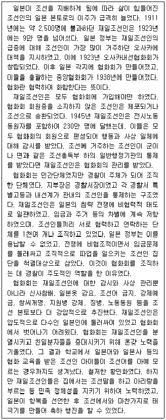
- 협화회는 재일조선인에 대한 교육을 담당하였다.
- 협화회는 조선총독부와 긴밀한 협조체계를 유지하였다.
- 협화회는 재일조선인 전시노동동원자에 대한 감시를 자행하였다.
- 재일조선인은 협화회에 조직적으로 저항하며 민족 정체성을 유지하였다.
- 일본의 민간인뿐만 아니라 일본 경찰에 협력한 조선인 친일분자들이 협화회 간부를 맡기도 하였다.
(정답률: 알수없음)

2. 다음 글에서 알 수 있는 것은?
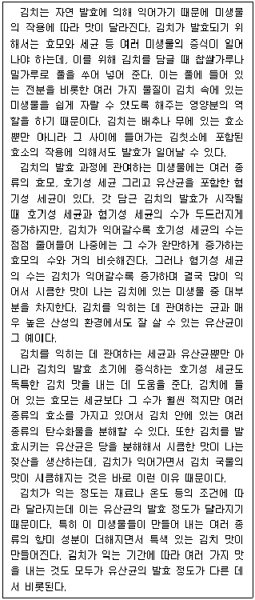
- 김치를 담글 때 넣는 풀은 효모에 의해 효소로 바뀐다.
- 강한 산성 조건에서도 생존할 수 있는 혐기성 세균이 있다.
- 김치 국물의 시큼한 맛은 호기성 세균의 작용에 의한 것이다.
- 특색 있는 김치 맛을 만드는 것은 효모가 만든 향미 성분 때문이다.
- 시큼한 맛이 나는 김치에 있는 효모의 수는 호기성 세균이나 혐기성 세균에 비해 훨씬 많다.
(정답률: 알수없음)
3. 다음 글에서 알 수 있는 것은?
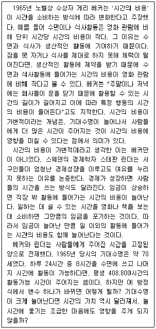
- 베커에 따르면, 2시간의 수면과 1시간의 영화 관람 중 시간의 비용은 후자가 더 크다.
- 베커에 따르면, 평일에 비해 주말에 단위 시간당 시간의 비용이 줄어드는데, 그 감소폭은 수면이 영화 관람보다 더 크다.
- 린더에 따르면, 임금이 삭감되었는데도 노동의 시간과 조건이 이전과 동일한 회사원의 경우, 수면에 들어가는 시간의 비용은 이전보다 줄어든다.
- 베커와 린더 모두 개인이 느끼는 시간의 비용이 작아질수록 주관적인 시간의 길이가 길어진다고 생각한다.
- 베커와 린더 모두 시간의 비용이 가변적이라고 생각했지만, 기대수명이 시간의 비용에 영향을 미치는지 여부에 관해서는 서로 다른 견해를 가지고 있었다.
(정답률: 알수없음)
4. 빈칸에 들어갈 진술로 가장 적절한 것은?
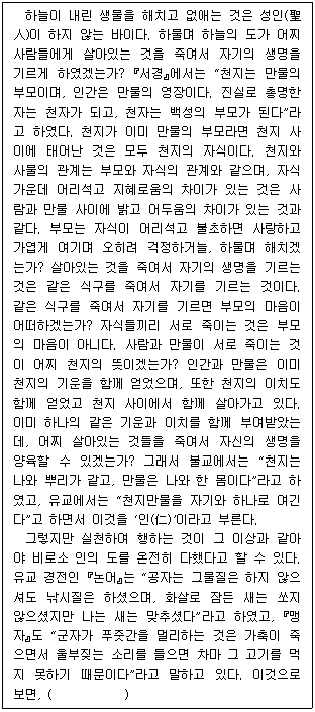
- 유교는 「서경」 이래 천지만물을 하나의 가족처럼 여기는 인의 도를 철두철미하게 잘 실천하고 있다.
- 유교에서는 공자와 맹자에서부터 살생하지 말라는 불교의 계율을 이미 잘 실천하고 있다.
- 유교의 공자와 맹자는 동물마저 측은히 여기는 대상에 포함하여 인간처럼 대하였다.
- 유교는 인의 도가 지향하는 이상을 실천하는 데 철저하지 못한 측면이 있다.
- 유교에서 인의 도는 인간과 동물을 부모와 자식의 관계로 보고 있다.
(정답률: 알수없음)
5. 다음 글에서 알 수 있는 것만을 ＜보기＞에서 모두 고르면?
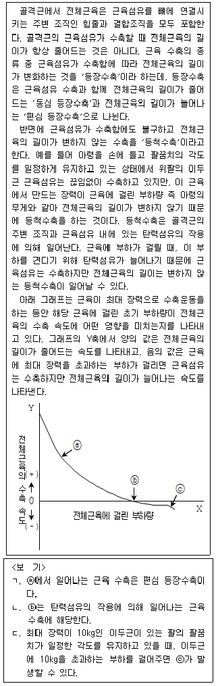
- ㄱ
- ㄴ
- ㄱ, ㄷ
- ㄴ, ㄷ
- ㄱ, ㄴ, ㄷ
(정답률: 알수없음)
6. 다음 글에서 알 수 없는 것은?
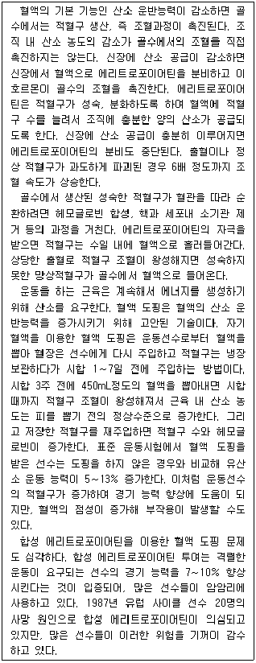
- 적혈구가 많아지는 것은 운동선수의 유산소 운동능력 향상에 도움이 된다.
- 혈액 도핑을 위해 혈액을 뽑으면 일시적으로 근육 내 산소 농도는 감소할 것이다.
- 혈액 도핑을 위해 혈액을 뽑으면, 운동선수의 혈관 내 혈액에서는 망상적혈구를 볼 수 있을 것이다.
- 합성 에리트로포이어틴을 이용한 혈액 도핑을 하면 적혈구 수의 증가가 가져오는 효과를 볼 수 있다.
- 혈액의 점성은 자기 혈액을 이용한 혈액 도핑보다 합성 에리트로포이어틴을 이용한 혈액 도핑을 할 때 더 증가한다.
(정답률: 알수없음)
7. 다음 A의 견해로 볼 수 없는 것은?
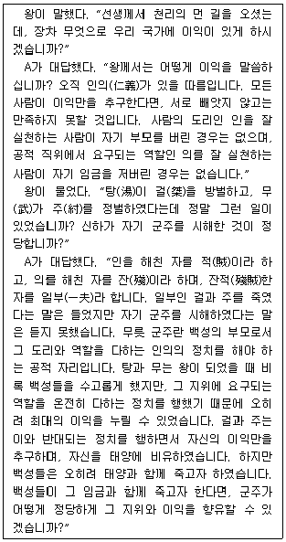
- 인의에 의한 정치를 펼치는 왕은 백성들을 수고롭게 할 수도 있다.
- 인의를 잘 실천하면 이익의 문제는 부차적으로 해결될 가능성이 있다.
- 탕과 무는 자기 군주를 방벌했다는 점에서 인의 가운데 특히 의를 잘 실천하지 못한 사람이다.
- 군주는 그 자신과 국가의 이익 이전에 군주로서의 도리와 역할을 온전히 수행하는 데 최선을 다해야 한다.
- 공적 지위에 있는 자가 직책에 요구되는 도리와 역할을 수행하지 않고 사익(私益)을 추구하면 그 권한과 이익을 제한하는 것은 정당하다.
(정답률: 알수없음)
8. 다음 ㉠에 따를 때 도덕적으로 허용될 수 없는 것만을 ＜보기＞에서 모두 고르면?
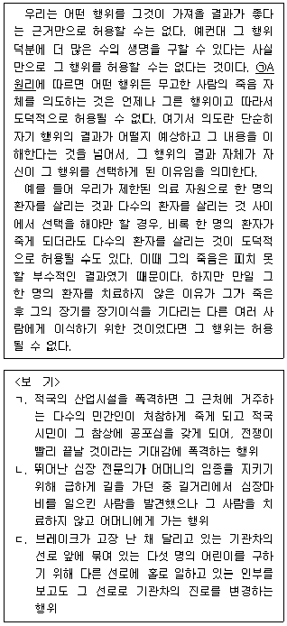
- ㄱ
- ㄴ
- ㄱ, ㄴ
- ㄱ, ㄷ
- ㄴ, ㄷ
(정답률: 알수없음)
9. 다음 ㉠의 내용으로 가장 적절한 것은?
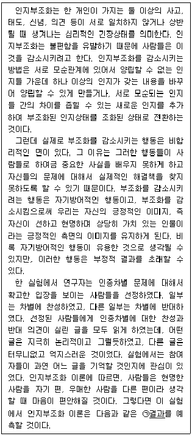
- 참여자들은 자신의 의견에 동의하는 논리적인 글과 반대편의 의견에 동의하는 논리적인 글을 기억한다.
- 참여자들은 자신의 의견에 동의하는 모든 글을 기억하고 반대편의 의견에 동의하는 모든 글을 기억하지 않는다.
- 참여자들은 자신의 의견에 동의하는 논리적인 글과 반대편의 의견에 동의하는 터무니없고 억지스러운 글을 기억한다.
- 참여자들은 자신의 의견에 동의하는 터무니없고 억지스러운 글과 반대편의 의견에 동의하는 논리적인 글을 기억한다.
- 참여자들은 자신의 의견에 동의하는 모든 글을 기억하고 반대편의 의견에 동의하는 논리적인 글은 기억하지 않는다.
(정답률: 알수없음)
10. 다음 ㉠의 사례로 가장 적절한 것은?
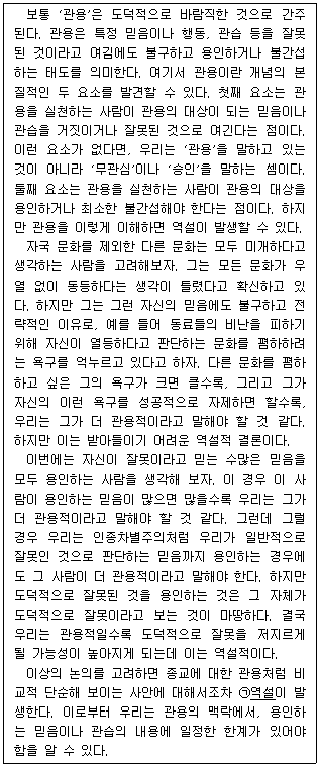
- 종교적 문제에 대해 별다른 의견이 없는 사람을 관용적이라고 평가하게 된다.
- 모든 종교적 믿음은 거짓이라고 생각하고 배척하는 사람을 관용적이라고 평가하게 된다.
- 자신의 종교가 주는 가르침만이 유일한 진리라고 믿는 사람일수록 덜 관용적이라고 평가하게 된다.
- 보편적 도덕 원칙에 어긋나는 가르침을 주장하는 종교까지 용인하는 사람을 더 관용적이라고 평가하게 된다.
- 자신이 유일하게 참으로 믿는 종교 이외의 다른 종교적 믿음에 대해서도 용인하는 사람일수록 더 관용적이라고 평가하게 된다.
(정답률: 알수없음)
11. 다음 글의 내용이 참일 때, 반드시 참인 것은?
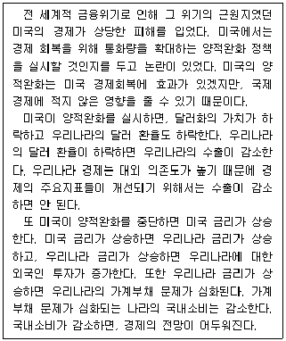
- 우리나라의 수출이 증가했다면 달러화 가치가 하락했을 것이다.
- 우리나라의 가계부채 문제가 심화되었다면 미국이 양적완화를 중단했을 것이다.
- 우리나라에 대한 외국인 투자가 감소하면 우리나라 경제의 전망이 어두워질 것이다.
- 우리나라 경제의 주요지표들이 개선되었다면 우리나라의 달러 환율이 하락하지 않았을 것이다.
- 우리나라의 국내소비가 감소하지 않았다면 우리나라에 대한 외국인 투자가 감소하지 않았을 것이다.
(정답률: 알수없음)
12. 다음 글의 내용이 참일 때, 반드시 참인 것은?
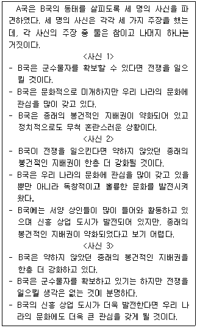
- B국은 문화적으로 미개하다.
- B국은 정치적으로 안정되어 있다.
- B국은 군수물자를 확보하고 있다.
- B국은 A국의 문화에 관심이 없다.
- B국은 전쟁을 일으킬 생각이 없다.
(정답률: 알수없음)
13. 다음 갑과 을의 견해에 대한 분석으로 가장 적절한 것은?
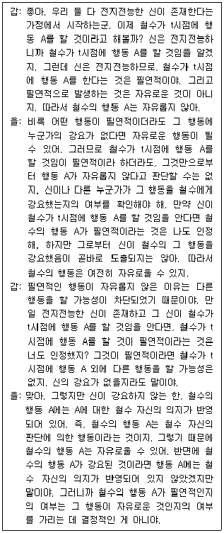
- 갑과 을은 전지전능한 신이 존재할 경우 철수의 행동에 철수의 의지가 반영될 수 없다는 데 동의한다.
- 갑은 강요에 의한 행동을 자유로운 것으로 생각하지 않지만, 을은 그것을 자유로운 것으로 생각한다.
- 갑은 필연적인 행동에는 다른 행동의 가능성이 차단된다고 생각하지만, 을은 필연적인 행동에도 다른 행동의 가능성이 있다고 생각한다.
- 갑은 만약 전지전능한 신이 존재하지 않는다면 철수의 행동은 자유로울 것이라고 생각하지만, 을은 그러한 신이 존재하더라도 철수의 행동은 자유로울 수 있다고 생각한다.
- 갑은 다른 행동을 할 가능성이 없으면 행동의 자유가 없다고 생각하지만, 을은 그런 가능성이 없다는 것으로부터 행동의 자유가 없다는 것이 도출된다고 생각하지 않는다.
(정답률: 알수없음)
14. 다음 A, B 두 사람의 논쟁에 대한 분석으로 가장 적절한 것은?
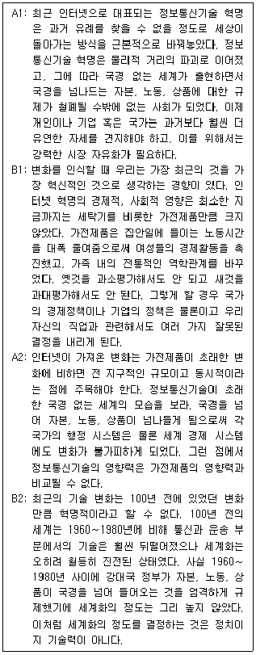
- 이 논쟁의 핵심 쟁점은 정보통신기술 혁명과 가전제품을 비롯한 제조분야 혁명의 영향력 비교이다.
- A1은 최근의 정보통신기술 혁명으로 말미암아 자본, 노동, 상품이 국경을 넘나드는 것이 보편적 현상이 되었다는 점을 근거로 삼고 있다.
- B1은 A1이 제시한 근거가 다 옳다고 하더라도 A1의 주장을 받아들일 수 없다고 주장하고 있다.
- B1과 A2는 인터넷의 영향력에 대한 평가에는 의견을 달리하지만 가전제품의 영향력에 대한 평가에는 의견이 일치한다.
- B2는 A2가 원인과 결과를 뒤바꾸어 해석함으로써 현상에 대한 잘못된 진단을 한다고 비판하고 있다.
(정답률: 알수없음)
15. 다음 논증의 구조를 분석한 것으로 가장 적절한 것은? (단, ↧는 '위의 문장이 아래 문장을 지지함'을, ⓐ＋ⓑ는 'ⓐ와 ⓑ가 결합됨'을 의미함)
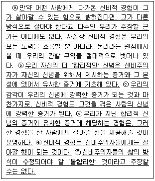
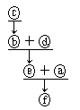
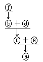
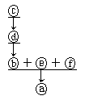
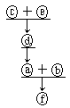
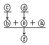
(정답률: 알수없음)
16. 다음 글의 내용에 대한 평가로 가장 적절한 것은?
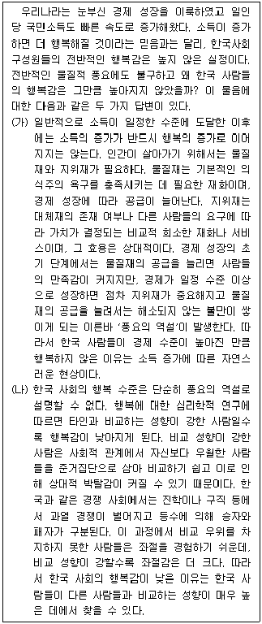
- 지위재에 대한 경쟁이 치열한 국가일수록 전반적인 행복감이 높다는 사실은 (가)를 강화한다.
- 경제적 수준이 비슷한 나라들과 비교하여 한국의 지위재가 상대적으로 풍부하다는 사실은 (가)를 강화한다.
- 한국 사회는 일인당 소득 수준이 비슷한 다른 나라들과 비교하더라도 행복감의 수준이 상당히 낮다는 조사 결과는 (가)를 강화한다.
- 한국보다 소득 수준이 높고 대학 입학을 위한 입시 경쟁이 매우 치열한 나라가 있다는 사실은 (나)를 약화한다.
- 자신보다 우월한 사람들을 준거집단으로 삼는 경향이 한국보다 강함에도 불구하고 행복감이 더 높은 나라가 있다는 사실은 (나)를 약화한다.
(정답률: 알수없음)
17. 다음 (가)와 (나)에 대한 평가로 적절한 것만을 ＜보기＞에서 모두 고르면?
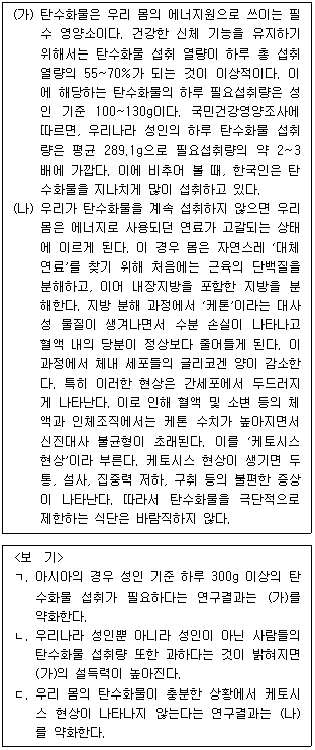
- ㄴ
- ㄷ
- ㄱ, ㄴ
- ㄱ, ㄷ
- ㄱ, ㄴ, ㄷ
(정답률: 알수없음)
18. 다음 글의 내용에 대한 평가로 가장 적절한 것은?
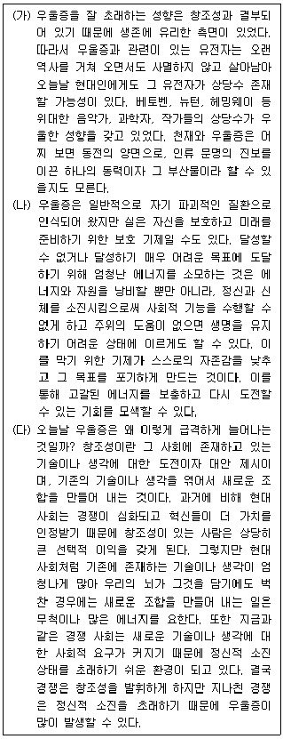
- 창조적인 사람들은 정서적으로 불안정하고 우울증에 걸릴 수 있는 유전자를 가질 확률이 높다는 사실은 (가)를 강화한다.
- 우울증에 걸린 사람 중에 어려운 목표를 포기하지 못하는 사람들이 많다는 사실은 (나)를 강화한다.
- 정신적 소진은 우울증을 초래할 가능성이 높다는 사실은 (다)를 약화한다.
- 유전적 요인이 환경에 적응하는 과정에서 정신질환이 생겨난다는 사실은 (가)와 (나) 모두를 약화한다.
- 과거에 비해 현대 사회에서 창조적인 아이디어를 만들어내기 어렵다는 사실은 (가)를 강화하고 (다)를 약화한다.
(정답률: 알수없음)
19. 위 글의 논지를 약화하는 진술로 가장 적절한 것은?(19번 공통지문 문제)
- 오스트랄로피테쿠스의 지능은 현생 인류에 비하여 현저하게 뒤떨어지는 수준이었다.
- '왼쪽'에 대한 반감의 정도가 서로 다른 여러 사회에서 왼손잡이의 비율은 거의 일정함이 밝혀졌다.
- 오른손잡이와 왼손잡이가 뇌의 해부학적 구조에서 유의미한 차이를 보이지 않는다는 사실이 입증되었다.
- 진화 연구를 통해 인류 조상들의 행동의 성패를 좌우한 것이 언어ㆍ개념과 무관한 시각 패턴 인식 능력이었음이 밝혀졌다.
- 태평양의 어느 섬에서 외부와 교류 없이 수백 년 동안 존속해 온 원시 부족 사회는 왼손에 대한 반감을 전혀 갖고 있지 않았다.
(정답률: 알수없음)
20. 다음 글의 내용과 부합하는 것은?
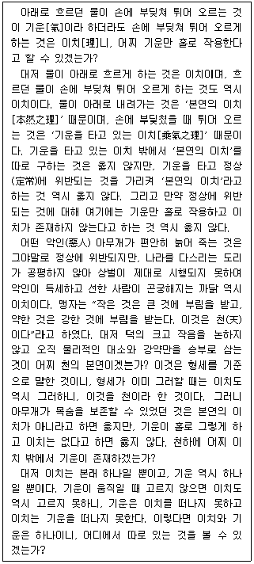
- 약한 것이 강한 것의 부림을 받는 것은 천의 본연이다.
- 형세가 바뀐 기운에는 그 기운을 타고 작용하는 이치가 반드시 있다.
- 기운을 타고 있는 이치 이외에 그 기준이 되는 본연의 이치가 독립적으로 실재한다.
- 악인이 편안히 늙어 죽는 것은 이치가 아니며, 다만 기운이 그렇게 작용할 뿐이다.
- 이치에는 본연의 것과 정상을 벗어난 것이 있는데, 이 중 본연의 이치만 참된 이치이다.
(정답률: 알수없음)
21. 다음 글에서 알 수 있는 것은?
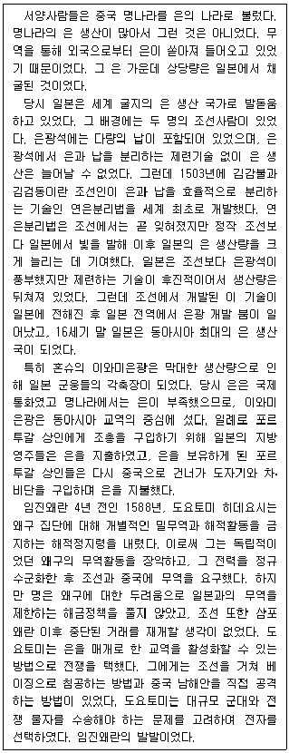
- 도요토미 히데요시는 해적정지령을 내려 조선ㆍ명과의 관계를 개선하였다.
- 일본은 조선보다 은광석이 풍부했으며 은광석의 납 함유율도 조선보다 높았다.
- 은을 매개로 한 조선ㆍ명ㆍ일본 3국의 교역망은 임진왜란 발발로 붕괴되었다.
- 연은분리법의 전파로 인해 일본의 은 생산량은 조선의 은 생산량을 앞지르게 되었다.
- 도요토미 히데요시가 일본을 통일하는 데 이와미은광에서 나온 은이 중요한 역할을 하였다.
(정답률: 알수없음)
22. 다음 글에서 알 수 없는 것은?
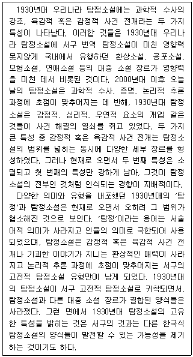
- 1930년대 우리나라에서 '탐정'이라는 말은 현재보다 더 넓은 의미를 가졌다.
- 서구의 고전적 탐정소설은 과학적 수사와 논리적 추론 과정에 초점을 맞춘다.
- 오늘날 우리나라 탐정소설에서는 기괴한 이야기가 가진 환상적 매력을 발견하기 어렵다.
- 과학적, 논리적 추론 과정의 정립은 한국식 탐정소설의 다양한 형식을 발전시키는 데 기여했다.
- 1930년대 우리나라 탐정소설은 서구 번역 탐정소설과 한국의 대중 소설 장르의 영향을 받았다.
(정답률: 알수없음)
23. 다음 글에서 알 수 없는 것은?
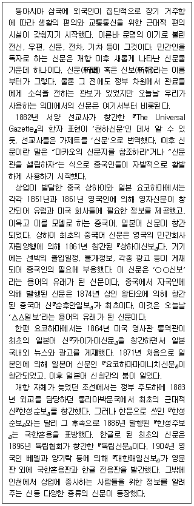
- 중국 상하이와 일본 요코하마에서 창간된 영자신문은 서양 선교사들이 주도적으로 참여하였다.
- 개항 이전에는 관료를 위한 관보는 있었지만, 민간인 독자를 대상으로 하는 신문은 없었다.
- '○○신보'나 '△△일보'란 용어는 민간이 만든 신문들의 이름에서 기인한다.
- 일본은 중국보다 자국인에 의한 자국어 신문을 먼저 발행하였다.
- 개항 이후 외국인의 필요에 의해 발행된 신문이 있었다.
(정답률: 알수없음)
24. 다음 글에서 알 수 있는 것만을 ＜보기＞에서 모두 고르면?
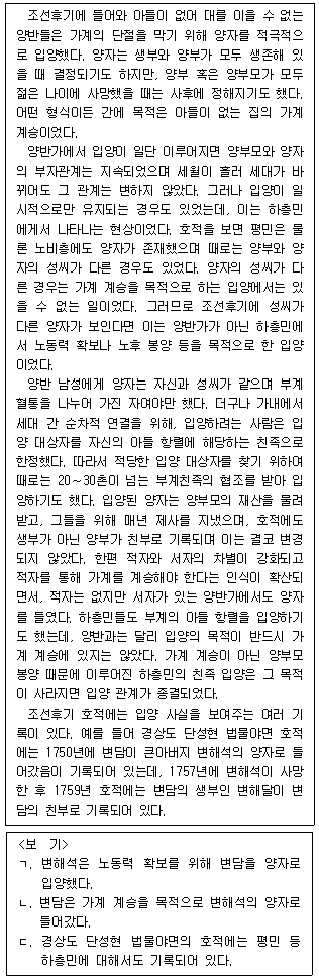
- ㄱ
- ㄷ
- ㄱ, ㄴ
- ㄴ, ㄷ
- ㄱ, ㄴ, ㄷ
(정답률: 알수없음)
25. 다음 글에서 바르게 추론한 것만을 ＜보기＞에서 모두 고르면?
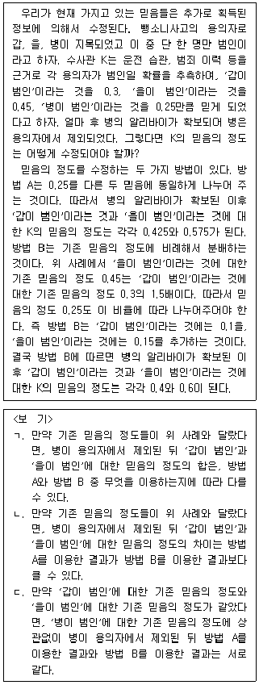
- ㄴ
- ㄷ
- ㄱ, ㄴ
- ㄱ, ㄷ
- ㄴ, ㄷ
(정답률: 알수없음)
26. 다음 ㉠의 사례로 적절한 것만을 ＜보기＞에서 모두 고르면?
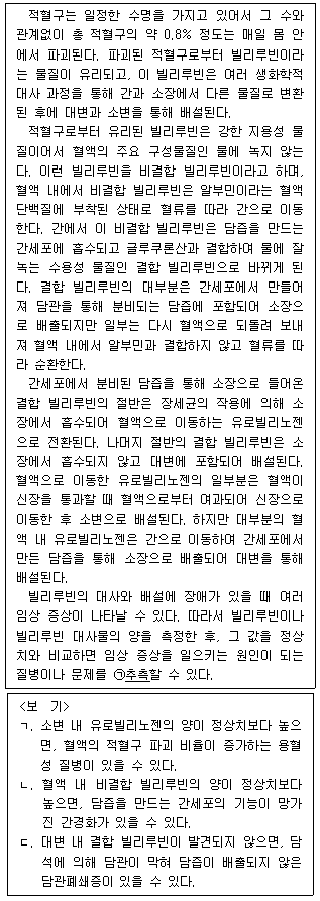
- ㄱ
- ㄴ
- ㄱ, ㄷ
- ㄴ, ㄷ
- ㄱ, ㄴ, ㄷ
(정답률: 0%)
27. 다음 ㉠과 ㉡에 대한 판단으로 가장 적절한 것은?
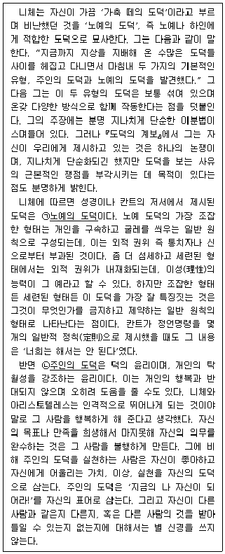
- 내가 '좋음'의 의미를 주체적으로 정립하여 사는 삶은 ㉠에 따라 사는 삶이다.
- 내가 나 자신의 탁월성 신장을 통하여 행복을 추구하여 사는 삶은 ㉠에 따라 사는 삶이다.
- 내가 끊임없이 스스로를 갈고 닦아 자신만의 개성을 만들어 사는 삶은 ㉠에 따라 사는 삶이다.
- 내가 내재화된 이성의 힘을 토대로 주체적인 삶을 영위하기 위해 노력하는 것은 ㉡에 따라 사는 삶이다.
- 내가 개인을 구속하는 일반 원칙에 얽매이지 않고 덕스러운 방식으로 행복을 추구하는 것은 ㉡에 따라 사는 삶이다.
(정답률: 알수없음)
28. 다음 글에 비추어 볼 때, 구들에 의한 영향으로 볼 수 있는 사례만을 ＜보기＞에서 모두 고르면?
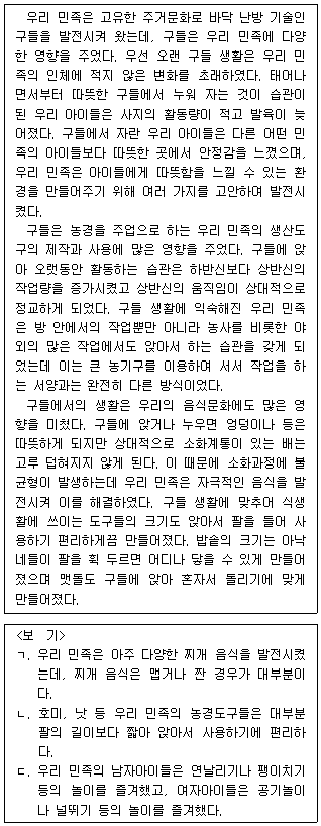
- ㄱ
- ㄴ
- ㄱ, ㄴ
- ㄱ, ㄷ
- ㄱ, ㄴ, ㄷ
(정답률: 알수없음)
29. 다음 A∼F에 대한 평가로 적절하지 않은 것은?
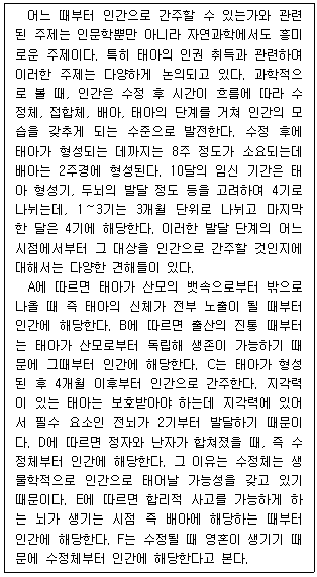
- A가 인간으로 간주하는 대상은 B도 인간으로 간주한다.
- C가 인간으로 간주하는 대상은 E도 인간으로 간주한다.
- D가 인간으로 간주하는 대상은 E도 인간으로 간주한다.
- D가 인간으로 간주하는 대상을 F도 인간으로 간주하지만, 그렇게 간주하는 이유는 다르다.
- 접합체에도 영혼이 존재할 수 있다는 연구결과를 얻더라도 F의 견해는 설득력이 떨어지지 않는다.
(정답률: 알수없음)
30. 다음 대화의 내용이 참일 때, 거짓인 것은?
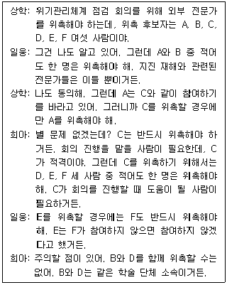
- 총 3명만 위촉하는 방법은 모두 3가지이다.
- A는 위촉되지 않을 수 있다.
- B를 위촉하기 위해서는 F도 위촉해야 한다.
- D와 E 중 적어도 한 사람은 위촉해야 한다.
- D를 포함하여 최소인원을 위촉하려면 총 3명을 위촉해야 한다.
(정답률: 알수없음)
31. 다음 글의 내용이 참일 때, 우수공무원으로 반드시 표창 받는 사람의 수는?
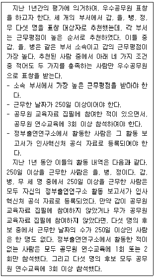
- 1명
- 2명
- 3명
- 4명
- 5명
(정답률: 알수없음)
32. 다음 ㉠~㉣에 대한 판단으로 가장 적절한 것은?
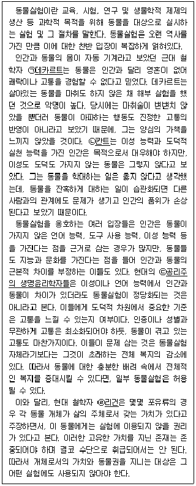
- ㉠과 ㉡은 이성과 도덕을 갖춘 인간의 이익을 우선시하기 때문에 동물실험에 찬성한다.
- ㉠과 ㉢은 동물이 고통을 느낄 수 있는지 여부에 관해 견해가 서로 다르다.
- ㉡과 ㉣은 인간과 동물의 근본적 차이로 인해 동물을 인간과 다르게 대우해도 좋다고 본다.
- ㉢은 언어와 이성 능력에서 인간과 동물이 차이가 있음을 부정한다.
- ㉣은 동물이 고통을 느낄 수 있는 존재이기 때문에 각 동물 개체가 삶의 주체로서 가치를 지닌다고 본다.
(정답률: 알수없음)
33. 다음 대화에 대한 분석으로 가장 적절한 것은?
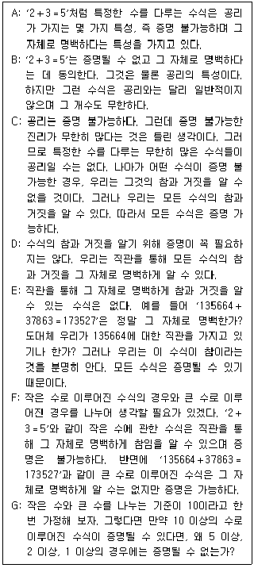
- B는 특정한 수를 다루는 수식이 공리의 특성을 갖는다고 해서 모두 공리는 아니라고 주장함으로써 A의 주장을 반박한다.
- C는 특정한 수를 다루는 수식이 무한히 많다는 것을 부정함으로써, 그러한 수식은 증명 불가능하다는 B의 주장을 반박한다.
- D는 큰 수로 이루어진 수식의 참과 거짓을 그 자체로 명백히 알 수 있다는 데 반대하고, E는 그것을 증명할 수 있다고 주장한다.
- F는 어떠한 수식도 증명을 통해 참임을 아는 것이 아니라는 D의 주장을 반박하면서 E의 주장을 옹호한다.
- G는 만약 큰 수로 이루어진 수식이 증명될 수 있다면 작은 수로 이루어진 수식도 증명될 수 있다는 점에 근거하여 F의 주장을 반박한다.
(정답률: 알수없음)
34. 다음 논증에 대한 평가로 적절한 것만을 ＜보기＞에서 모두 고르면?
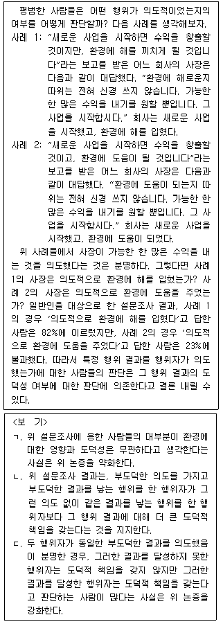
- ㄱ
- ㄴ
- ㄱ, ㄷ
- ㄴ, ㄷ
- ㄱ, ㄴ, ㄷ
(정답률: 알수없음)
35. 다음 글의 내용을 평가한 것으로 가장 적절한 것은?
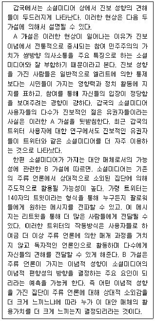
- 갑국에 적용한 것과 동일한 방식으로 분석했을 때, 을국의 경우 트위터 사용자들은 진보 성향보다 보수 성향이 많았다는 사실은 A 가설을 약화하지 않는다.
- 갑국의 주류 언론은 보수적 이념 성향이 강하다는 사실은 B 가설을 강화한다.
- 갑국의 젊은 사람들 중에 진보 성향의 비율이 높다는 사실은 A 가설을 강화하고 B 가설은 약화한다.
- 갑국에서 주류 언론보다 소셜미디어의 영향력이 강하다는 사실은 A 가설과 B 가설을 모두 강화한다.
- 갑국에서는 정치 활동을 많이 하는 사람들이 소셜미디어를 더 많이 사용한다는 사실은 A 가설과 B 가설을 모두 약화한다.
(정답률: 알수없음)
36. 다음 ㉠을 약화하는 것만을 ＜보기＞에서 모두 고르면?
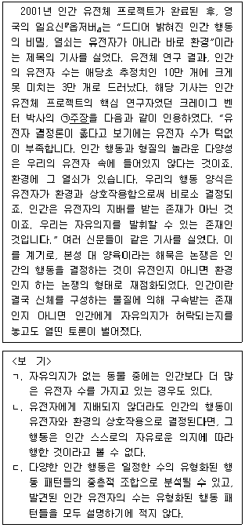
- ㄱ
- ㄴ
- ㄱ, ㄷ
- ㄴ, ㄷ
- ㄱ, ㄴ, ㄷ
(정답률: 알수없음)
37. 다음 A의 견해를 약화하는 진술로 적절하지 않은 것은?
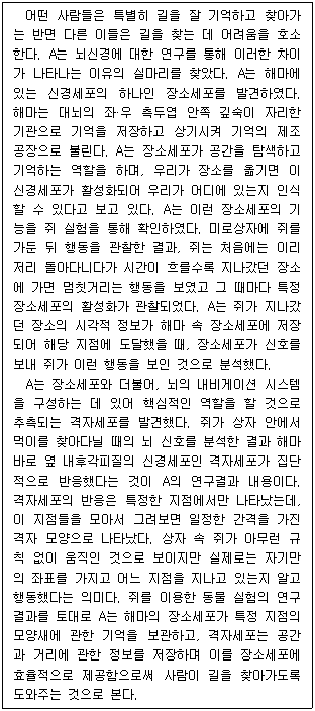
- 해마의 신경세포가 거의 활성화되지 않아도 쥐가 길을 잘 찾는 연구 사례가 보고되었다.
- 사람의 장소세포는 쥐와 달리 해마뿐만 아니라 소뇌에서도 발견된다는 연구 사례가 보고되었다.
- 공간과 거리에 대한 정보량은 산술적으로 매우 크기 때문에 신경세포가 저장할 수 있는 양을 초과한다.
- 미로상자 속의 쥐가 멈칫거리는 행동은 이미 지나간 장소에 있던 냄새를 기억했기 때문이라는 것이 밝혀졌다.
- 쥐에는 있지만 사람에게는 없는 세포 구성 성분이 발견된 것에 비추어 볼 때, 사람의 세포가 쥐의 세포와 유사하지 않다.
(정답률: 알수없음)
38. 위 글의 ㉠으로 가장 적절한 것은?(39번 공통지문 문제)
- 양자역학의 한 해석이 확증되면 다른 해석도 확증된다.
- 우리의 모든 경험이 확증하는 양자역학의 해석은 없다.
- 우리의 경험이 다르면 그 경험이 확증하는 양자역학의 해석도 다르다.
- 특정한 경험은 양자역학의 두 해석을 모두 확증하거나 모두 확증하지 못한다.
- 어떤 경험을 하든지 우리의 경험은 양자역학의 특정한 해석하나만을 확증한다.
(정답률: 알수없음)